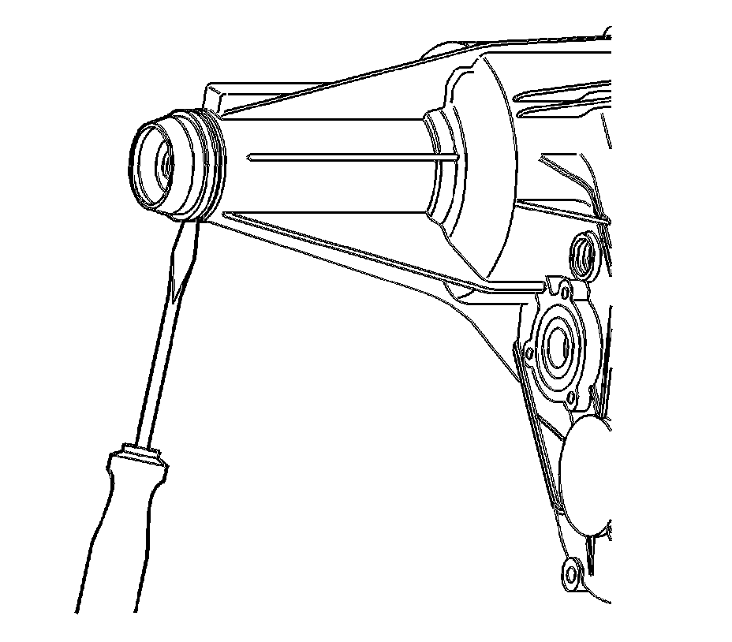
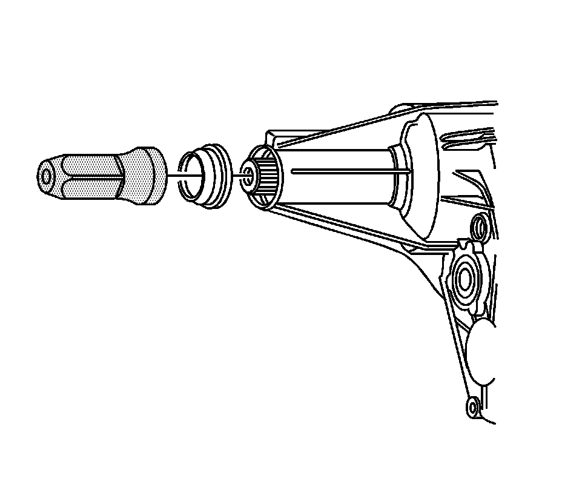

Transfer Case Output Shaft Seal Replacement - Rear
Transfer Case Output Shaft Seal Replacement - Rear
Tools Required
J 45756 Output Shaft Seal Installer
Removal Procedure

1. Raise and suitably support the vehicle. Refer to Lifting and Jacking the Vehicle.
2. Remove the transfer case shield, if equipped.
3. Remove the rear propeller shaft.
4. Remove the rear output shaft seal by prying it out with a flat tipped screwdriver.
Installation Procedure

1. Using the J 45756, install a NEW front output shaft seal.
2. Install the rear propeller shaft.
3. Check the fluid level. Add fluid, if necessary.
4. Install the transfer case shield, if equipped.
5. Lower the vehicle.